All Projects
About Andrew
All Projects
About Andrew

|  |
Park After Dark |

|
Project Type
My Roles
Source CodeDownload and PlayMade For |
|

Park After Dark is a top-down arcade action stealth game about being sneaky and scoring high! This game jam's theme was 'Theme Park,' and my team decided to turn out the lights and get crafty with a style of game we knew we could both create and polish to be fun and engaging within the time restrictions. As the most experienced programmer, I developed the movement, scoring, and scaling difficulty systems, programmed the UI and leaderboard, and assisted with the light detection system.
Out of those, my favorite system is definitely the scaling difficulty. To maintain an arcade style of gameplay, there is no true win condition in Park After Dark, only the chance to get the highest score before you lose. I built and balanced the introduction of new hazards and hazard types into a play session, tying the ramping difficulty to both time elapsed and how well the player is scoring.
Programming Accomplishments
|
Other Accomplishments
|

|
Link up on my LinkedIn profile |
Scratch an itch on my Itch.io page |
Send me an email at awk481@gmail.com |
© 2024 Andrew Kohler